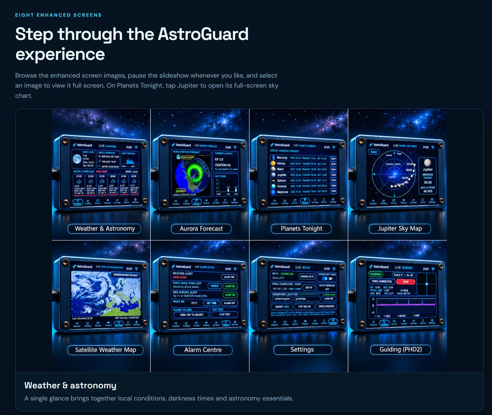

Night-sky weather
Current conditions and an hourly dusk-to-dawn outlook for cloud, rain, temperature, wind, gusts, direction and snowfall.
A dedicated touchscreen companion for astrophotographers. Monitor PHD2 guiding in real time, with alarms for a lost guide star, incoming rain and aurora activity, plus a daily wake alarm.

I wanted to be able to go to sleep with AstroGuard beside my bed, knowing it was keeping watch over an imaging session. If rain was forecast or my PHD2 guiding failed, it could wake me so I could protect the equipment and decide what to do.
That simple idea grew into something much bigger. I added the other screens I wanted close at hand while observing: weather and astronomy conditions, guiding, aurora forecasts, planets, satellite imagery, alarms and settings.
AstroGuard brings those views together in one dedicated device, made for the particular needs of an astronomy night.

Weather · guiding · aurora · planets · satellite map · alarms · settings.
AstroGuard brings observing conditions, guiding information and useful alerts together in one compact touchscreen dashboard.
Download the user manual ↓Current conditions and an hourly dusk-to-dawn outlook for cloud, rain, temperature, wind, gusts, direction and snowfall.
EXCELLENT, GOOD, FAIR or POOR ratings, a best observing window and a night summary when forecast coverage is sufficient. Ratings consider clouds, precipitation, wind, Moon illumination, darkness and dew-point spread.
Moon phase and illumination, rise and set, estimated highest altitude during astronomical darkness, darkness timing and a sky-path chart.
Upcoming visible passes with local rise, peak and set times, peak elevation and a sky-path chart. Availability depends on the prediction service and current orbital data.
Monitor guiding live with an RA/Dec error graph, RMS and peak error, correction pulses, guide interval, exposure and available star metrics. Values use pixels until PHD2 supplies a pixel scale.
GuideStep samples during PHD2 settle phases are excluded from guiding totals in published build 11 / firmware 0.10.
NOAA OVATION model intensity, planetary Kp context, forecast trend and aurora map, with data-age indicators.
Tonight's above-horizon planets, their rise, transit and set times, and individual sky-path charts.
Infrared satellite imagery for Europe, refreshed over Wi-Fi.
Audible alarms for guide-star loss, incoming rain and high aurora activity, plus a daily wake alarm. Set volume, test the chime, choose guide-star sensitivity and silence active alerts.
Seven-screen navigation, full-screen guiding graph, adjustable graph scale and history, brightness, orientation and an optional one-hour screen-off timer.
On-device 2.4 GHz network selection or a phone-friendly setup page, up to four saved Wi-Fi profiles, location lookup and automatic reconnection.
Connect to PHD2's event server over your local network (port 4400 by default), see connection status and access a guarded stop-capture control while connected.
Checks for updates at startup and about every 24 hours when connected. AstroGuard offers new firmware on screen; installation begins only when you choose Update Now. You can also check manually in Settings.
Network profiles, location, PHD2 host, alert choices, display preferences and graph settings persist across power cycles.
The main forecast uses Open-Meteo.
Forecasts and suitability ratings are decision aids, not guarantees. The dew figure is estimated from ambient weather data; AstroGuard has no equipment or lens temperature sensor. Cloud cover does not measure transparency or seeing. ISS predictions can be unavailable if the service is offline or orbital data is stale. Official severe-weather warning bulletins are not provided. Online features depend on working internet and third-party services.
Feature availability can vary by firmware build. Check your device's release notes for the features supported by your installed version.